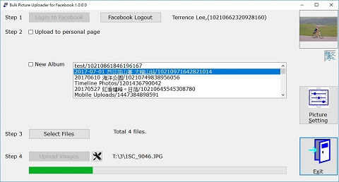
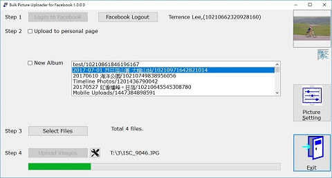

Upload Files to Facebook
To start the upload process, you should click
the button.
The system will start the process and you could
see the process bar changes.


To change the upload setting, you could click
the
button. Please see Upload Setting
to get more detail.